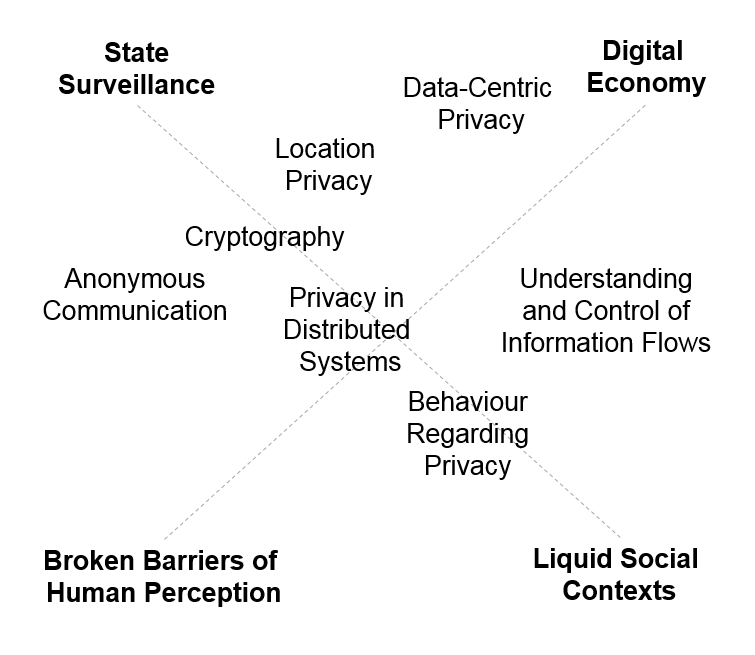

<!doctype html>
<html lang="en">

	<head>
		<meta charset="utf-8">

		<title>Context-awareness Privacy in Data Communications - Presentation</title>

		<meta name="description" content="Presentation for the Defense of the PhD Thesis 'Context-awareness Privacy in Data Communications'">
		<meta name="author" content="Joao Miguel Goncalves">

		<meta name="apple-mobile-web-app-capable" content="yes" />
		<meta name="apple-mobile-web-app-status-bar-style" content="black-translucent" />

		<meta name="viewport" content="width=device-width, initial-scale=1.0, maximum-scale=1.0, user-scalable=no, minimal-ui">

		<link rel="stylesheet" href="css/reveal.css">
		<link rel="stylesheet" href="css/theme/white.css" id="theme">
		<link rel="stylesheet" href="custom.css" id="custom">

		<!-- Code syntax highlighting -->
		<link rel="stylesheet" href="lib/css/zenburn.css">

		<!-- Printing and PDF exports -->
		<script>
			var link = document.createElement( 'link' );
			link.rel = 'stylesheet';
			link.type = 'text/css';
			link.href = window.location.search.match( /print-pdf/gi ) ? 'css/print/pdf.css' : 'css/print/paper.css';
			document.getElementsByTagName( 'head' )[0].appendChild( link );
		</script>

		<!--[if lt IE 9]>
		<script src="lib/js/html5shiv.js"></script>
		<![endif]-->
	</head>

	<body>

		<div class="reveal">

			<!-- Any section element inside of this container is displayed as a slide -->
			<div class="slides">
				<section>
					<h2 class="centered">Context-awareness Privacy in Data Communications</h2>
					<h3 class="centered">PhD Thesis Defense Presentation</h3>
					<p class="centered">
						<small>Aveiro, 6th November 2015</small>
					</p>
					<div style="height:80px">
						
						
					</div>
					<div style="height:80px;margin-top:20px">
						
						
					</div>
				</section>

				<section>
					<section>
						<h2>1. Motivation</h2>
						<p>Privacy is a requirement for <strong>individuality</strong> and <strong>freedom</strong></p>
						<p>Potentially historic <strong>definition moment</strong></p>
					</section>
					<section>
						<h2>1.1 The Panopticon</h2>
						
					</section>
					<section>
						<h2>1.2 Why does privacy matter?</h2>
						<blockquote>
								&ldquo;By always being visible, by constantly living under the reality that one could be observed at any time, people assimilate the effects of surveillance into themselves.&rdquo;</blockquote>
						<p class="centered">- <strong>Daniel Solove</strong> in <em>The Digital Person</em></p>
					</section>
					<section>
						<h2>1.3 Why now?</h2>
						<p>Merger of <strong>offline and online</strong> worlds</p>
						<p>State internet-based <strong>surveillance</strong></p>
						<p>Personal-data driven <strong>digital economy</strong></p>
						<p>Proliferation of <strong>sensors</strong> and the advent of <strong>wearables</strong></p>
						<p>Vision of <strong>Ambient Intelligence</strong></p>
					</section>
					<section>
						<h2>1.4 Privacy in Media over Time</h2>
						<iframe src="timelines/index.html" style="width:1000px;height:800px"></iframe>
					</section>
				</section>

				<section>
					<section>
						<h2>2. Hypothesis</h2>
						<p>Unidentified <strong>synergies between different privacy-related bodies of knowledge</strong> exist that are <strong>key for improving privacy</strong> in face of <strong>near-future technologies</strong></p>
					</section>
					<section>
						<h2>2.1 Privacy is a complex goal</h2>
						<p>Data <strong>collection</strong>, <strong>use</strong> and <strong>dissemination</strong>, as well as privacy <strong>invasions</strong></p>
						<p>Context-dependent <strong>choice and control</strong></p>
						<p>Seemingly <strong>irrational user choices regarding privacy</strong>, due to poor communication and fast technological change</p>
					</section>
					<section>
						<h2>2.2 ICT fields are barely bridged...</h2>
						
					</section>
					<section>
						<h2>2.3 ...and contribute differently to challenges</h2>
						
					</section>
				</section>

				<section>
					<section>
						<h2>3. Towards an Identity Layer</h2>
						<p>Re-unite <strong>authentication</strong> and <strong>encryption</strong></p>
						<p><strong>Pseudonym</strong>-enabled single sign-on</p>
						<p>Separate <strong>network</strong>-level from <strong>application</strong>-level <strong>attacks</strong></p>
						<p><strong>Decentralize</strong> service providers</p>
					</section>
					<section>
						<h2>3.1 Identinet</h2>
						<p>Simplistic <strong>network</strong> &amp; <strong>session</strong> identifier decoupling</p>
						<p>Identity-based </strong>endpoint resolution</strong> and <strong>routing</strong></p>
						<p>TODO IMAGE?</p>
					</section>
					<section>
						<h2>3.2 User-hosted SOA</h2>
						<p>Distributed service-oriented ecosystem</p>
						
					</section>
					<section>
						<h2>3.3 <em>SOCIETIES</em> prototype</h2>
						<p>XMPP adapted to be used as a session-layer protocol</p>
						<p>Used by over 15 developers to expose over 40 different services</p>
						
					</section>
					<section>
						<h2>3.4 Identity-driven Service Discovery</h2>
						<pre><code class="xml">
<iq from='user1.societies.local' to='client@societies.local/device' type='result' id='info1'>
 <query xmlns='http://jabber.org/protocol/disco#info'>
  <identity category='component' type='generic' name='Societies Communication Manager'></identity>
  <feature var='http://jabber.org/protocol/disco#info'></feature>
  <feature var='urn:xmpp:ping'/></feature>
  <feature var='jabber:iq:last'/></feature>
  <feature var='urn:xmpp:time'/></feature>
  <feature var='http://jabber.org/protocol/pubsub'/></feature>
  <feature var='http://societies.org/api/schema/privacytrust/trust/broker'/></feature>
  <feature var='http://societies.org/api/schema/privacytrust/trust/model'/></feature>
  <feature var='http://societies.org/api/schema/privacytrust/trust/evidence/collector'/></feature>
 </query>
</iq>
						</code></pre>
					</section>
					<section>
						<h2>3.5 Service-defined Payloads</h2>
						<pre><code class="xml">
<iq from='css1@societies.local/device' to='cis1.societies.local' type='set' id='join1'>
 <community xmlns='http://societies.org/community'>
   <join></join>
 </community>
</iq>
						</code></pre>
					</section>
				</section>


				<section>
					<section>
						<h2>4. Privacy-friendly Context-awareness</h2>
						<p>Key aspect of Ambient Intelligence due to <strong>reactive</strong> nature</p>
						<p><strong>Decoupling</strong> between context acquisition and consumption</p>
						<p><strong>Extensible</strong> context information types</p>
						<p><strong>Real-time</strong> context delivery</p>
						<p>Privacy through <strong>data minimization</strong></p>
					</section>
					<section>
						<h2>4.1 Near-future Context-awareness Scenarios</h2>
						<p>Geographic alarms</p>
						<p>Service adaptation</p>
						<p>TODO</p>
					</section>
					<section>
						<h2>4.2 Event-driven Context Delivery</h2>
						<p>TODO</p>
					</section>
					<section>
						<h2>4.3 Low-Latency Access Control</h2>
						<p>TODO</p>
					</section>
				</section>

				<section>
					<section>
						<h2>5. Data-level Re-Identification</h2>
						<p>TODO</p>
					</section>
					<section>
						<h2>data-level pseudonym unlinkability through PPDM #2</h2>
						<p>TODO Section 5</p>
					</section>
					<section>
						<h2>data-level pseudonym unlinkability through PPDM #3</h2>
						<p>TODO Section 5</p>
					</section>
				</section>

				<section>
					<section>
						<h2>Implications for the domain</h2>
						<p>TODO Section 6</p>
					</section>
					<section>
						<h2>Implications for the domain #2</h2>
						<p>TODO 7.2.1 Communications and Data Perspectives Towards a Privacy-enhancing Identity Layer</p>
					</section>
					<section>
						<h2>Implications for the domain #3</h2>
						<p>TODO 7.2.2 Data Minimization in Context-awareness Scenarios</p>
					</section>
				</section>

			</div>

		</div>

		<script src="lib/js/head.min.js"></script>
		<script src="js/reveal.js"></script>

		<script>

			// Full list of configuration options available at:
			// https://github.com/hakimel/reveal.js#configuration
			Reveal.initialize({
				controls: true,
				progress: true,
				history: true,
				center: true,

				transition: 'slide', // none/fade/slide/convex/concave/zoom

				// Optional reveal.js plugins
				dependencies: [
					{ src: 'lib/js/classList.js', condition: function() { return !document.body.classList; } },
					{ src: 'plugin/markdown/marked.js', condition: function() { return !!document.querySelector( '[data-markdown]' ); } },
					{ src: 'plugin/markdown/markdown.js', condition: function() { return !!document.querySelector( '[data-markdown]' ); } },
					{ src: 'plugin/highlight/highlight.js', async: true, condition: function() { return !!document.querySelector( 'pre code' ); }, callback: function() { hljs.initHighlightingOnLoad(); } },
					{ src: 'plugin/zoom-js/zoom.js', async: true },
					{ src: 'plugin/notes/notes.js', async: true }
				]
			});

		</script>

	</body>
</html>
